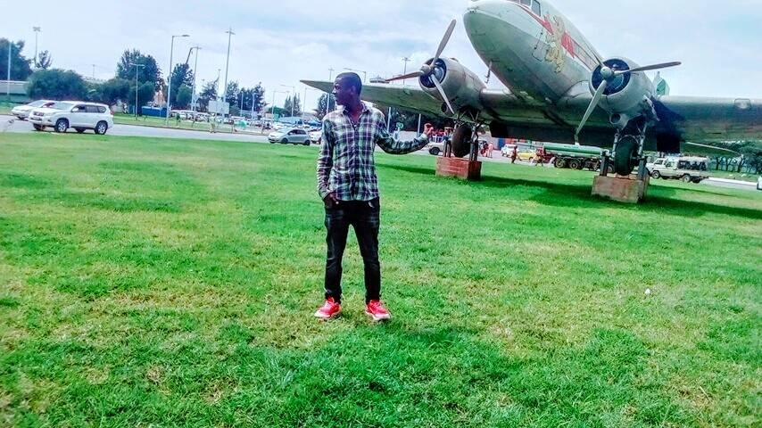

my philosophy

Here I want to describe my overall view of, or attitude toward, life and the purpose of life.I believe that my various experiences shape and form my philosophies about life, death, the earth, etc. Our philosophy is, most of the time, shaped by the philosophical thinking of the community in which we live. My attitude toward life are built up on the teaching of Bible. Some parts of my philosophy are also shaped by the community in which I live.
Once, I didn't have a good attitude towards life. I was pessimistic
about everything, nothing made me happy, and I worried about
everything. Then my personal relationship with God began to form. My
view of life started to change from negative to positive. I began to
see the meaning of life and I found a reason for living happily and
the reason to have an attitude of gratitude and joy toward life.
| My attitude on different topic. | ||
|---|---|---|
| about life | about earth | about death |
| Life is like morning fog, that appear for a little while then it gone. We can't predict or control the future. Our life are temporary and fragile. | Earth created by the command of God. By the same word the earth and heaven that now exist are stored up for fire. This heaven and earth will pass away. | Death happens to everyone, regardless of age, race, gender, religion, or status. And all who died will awake, some to everlasting life, and some to shame and everlasting contempt. |